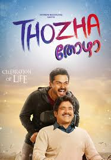
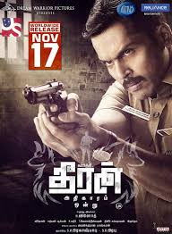
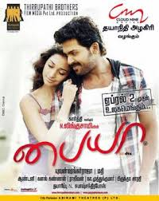

SPOTSTAR - KARTHI
Karthi, born on May 25, 1977, is a popular Indian actor known for his work in Tamil cinema. He is the younger brother of actor Suriya and the son of veteran actor Sivakumar. Before entering films, Karthi earned a degree in engineering and also studied film-making in the United States. He began his acting career with the critically acclaimed film Paruthiveeran, which earned him widespread recognition and several awards for his powerful performance. Known for his natural acting style and strong screen presence, Karthi has carved a unique identity in the industry. He has acted in a variety of films such as Aayirathil Oruvan, Paiyaa, Naan Mahaan Alla, Theeran Adhigaaram Ondru, and Kaithi, each showcasing his versatility and dedication. Karthi is admired for taking up challenging roles and bringing authenticity to his characters. Beyond acting, he is also involved in charitable activities and supports causes related to education and rural development. Karthi is appreciated not only for his talent but also for his humility and grounded nature. With a growing fan base and consistent performances, he continues to be one of the leading actors in Tamil cinema.
POPULAR FILMS



